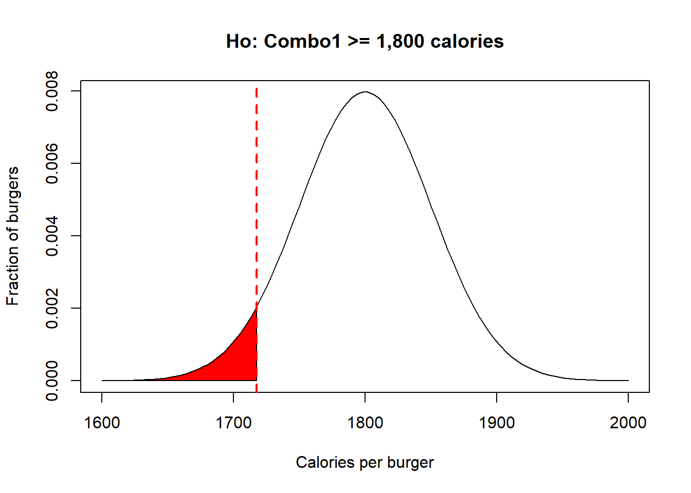

Stating hyphotheses and tails
The statistical approach to hypothesis testing is to reduce all likely options to a binary choice between the null hypothesis or the alternative hypothesis.
The null hypothesis is denoted with the letters \(Ho\). The alternative hypothesis is denoted with the letters \(H1\).
The null hypothesis is always making reference to how things should commonly be, it can also make references to the option of no-difference or that something is equal to a given value. The alternative hypothesis is all what the null hypothesis is not.
Check the following video, about how to state hypothesis.
In statistics, you can only reject the null hypothesis or fail to reject the null hypothesis (this is synonym for accept the null hypothesis, but this term is not accepted because we are never certain). Along the same lines, when you reject the null hypothesis, we you do not accept the alternative hypothesis.

Figure 8.8: Painfull rejection narrative
There are several ways to state hypotheses. Let’s try a few examples to clarify:
Say a burger company claims that their Combo #1 has 1,800 calories, with a variability (Standard deviation, SD) of 50 calories. To test if this is true you can set your hypotheses different ways, like:
Null hypothesis, Ho: Combo1 = 1,800 calories.
Alternative hypothesis, H1: Combo1 \(\neq\) 1,800 calories.
In this form, I am asking if the burger is equal to 1,800 calories. In this case, the alternative has to be that the burger is different than 1,800cal. To be different, a burger could be much smaller than 1,800cal but it can also be much larger than 1,800 calories.
If I take several of their burgers, and measure their caloric content, I can reject the null hypothesis if the sample I took had much higher or lower number of calories that the critical value at which the significance level, \(\alpha\), I chosen falls.
This is what is call a two-tail test. Basically, you have to divide the level of significance in two as you will be testing if the sample is much smaller or much larger. If my sample falls in the red areas, in the image below, then I reject the null hypothesis, as it means that my one sample is much larger than the upper 97.5% or much lower 2.5%, or an \(\alpha\)=0.05. Let’s visualize this in R,
mean=1800 # this is the mean number of calories in their burger. We can think of this as the population mean
sd=50 #this is the variability in calories
# create a normal distribution of burgers with the given mean and SD
x <- seq(-4,4,length=100)*sd + mean # This w
y <- dnorm(x,mean,sd)
plot(x, y, type="l", xlab="Calories per burger", ylab= "Fraction of burgers",ylim=c(0,0.009),main="Ho: Combo1 = 1,800 calories") # this is how the calories of the population of burgers should look like
#because this is a two tail distribution, I mean something will be different if it is much larger or much smaller, then you have to look for the critical value at alpha divided by 2.
LowerCriticalVal=qnorm(0.025,mean,sd) # we need to find the critical value at 2.5% and the upper 97.5%...that is a significance level of 5%
UpperCriticalVal=qnorm(0.975,mean,sd) # upper critical value, or value above which 97.5% of the population occurs.
#plot the critical thresholds set by alpha
abline(v=UpperCriticalVal, lwd=2, col="red", lty=2)
abline(v=LowerCriticalVal, lwd=2, col="red", lty=2)
#Lets plot the critical areas
polygon(c(x[x>=UpperCriticalVal], UpperCriticalVal), c(y[x>=UpperCriticalVal], y[x==max(x)]), col="red") #right hand tail
polygon(c(x[x<=LowerCriticalVal], LowerCriticalVal), c(y[x<=LowerCriticalVal], y[x==max(x)]), col="red") #right hand tail
#let's make this fancier and put arrows to indicate rejection areas. We will use the package shape for this
#install.packages("shape")
library(shape)
Arrows(LowerCriticalVal,0.006,LowerCriticalVal-50,0.006,lwd=2, arr.type="triangle")
text(LowerCriticalVal,0.0065,"Reject",pos=2)
#we can do add the same arrow for the upper tail of rejection zone
Arrows(UpperCriticalVal,0.006,UpperCriticalVal+50,0.006,lwd=2, arr.type="triangle")
text(UpperCriticalVal,0.0065,"Reject",pos=4)
#while we are at it, lets indicate the zone of the level of confidence
Arrows(LowerCriticalVal,0.0085,UpperCriticalVal,0.0085,lwd=2, arr.type="curved",code=3)
text(mean,0.0085,"Level of confidence ",pos=3)
The hypotheses could also be stated as:
Null hypothesis, Ho: Combo1 <= 1,800 calories.
Alternative hypothesis, H1: Combo1 > 1,800 calories.
In the example above, I am being more specific, testing the null hypothesis that the average burger has less than 1,800 caloriess; the alternative hypothesis has ti be that the burger has more than 1,800 calories.
If I take several of their burgers, and measure their caloric content, I can reject the null hypothesis only if the sample I took had much higher number of calories than the critical value at which the significance level, \(\alpha\), I chosen falls. This is what is call a right-tail test. Lets visualize this in R,
mean=1800 # this is the mean number of calories in their burger. We can think of this as the population mean
sd=50 #this is the variability in calories
# create a normal distribution of burgers with the given mean and SD
x <- seq(-4,4,length=100)*sd + mean
y <- dnorm(x,mean,sd)
plot(x, y, type="l", xlab="Calories per burger", ylab= "Fraction of burgers",main="Ho: Combo1 <= 1,800 calories") # this is how the calories of the population of burgers should look like
UpperCriticalVal=qnorm(0.95,mean,sd) #in this case I am looking for the upper 5% of the individuals..or the threshold at which 95% of the population occurs
#plot the critical thresholds set by alpha
abline(v=UpperCriticalVal, lwd=2, col="red", lty=2)
#Lets plot the one critical area
polygon(c(x[x>=UpperCriticalVal], UpperCriticalVal), c(y[x>=UpperCriticalVal], y[x==max(x)]), col="red") #right hand tail
The hypotheses could also be set like this:
Null hypothesis, Ho: Combo1 >= 1,800 calories.
Alternative hypothesis, H1: Combo1 < 1,800 calories.
In the example above, I am testing if the burgers have more calories than what the company claims. The alternative hypothesis, then has to be that the burgers have less than 1,800 calories.
If I take several of their burgers, and measure their caloric content, I can reject the null hypothesis only if the sample I took had much fewer number of calories than the critical value at which the significance level I chosen falls. This is what is call a left-tail test. Lets visualize this in R,
mean=1800 # this is the mean number of calories in their burger. We can think of this as the population mean
sd=50 #this is the variability in calories
# create a normal distribution of burgers with the given mean and SD
x <- seq(-4,4,length=100)*sd + mean # This w
y <- dnorm(x,mean,sd)
plot(x, y, type="l", xlab="Calories per burger", ylab= "Fraction of burgers",main="Ho: Combo1 >= 1,800 calories") # this is how the calories of the population of burgers should look like
UpperCriticalVal=qnorm(0.05,mean,sd) #in this case I am looking for the lower 5% of the individuals..or the threshold at which 5% of the population occurs
#Lets plot the one critical area
polygon(c(x[x<=UpperCriticalVal], UpperCriticalVal), c(y[x<=UpperCriticalVal], y[x==max(x)]), col="red") #right hand tail
#plot the critical thresholds set by alpha
abline(v=UpperCriticalVal, lwd=2, col="red", lty=2) 